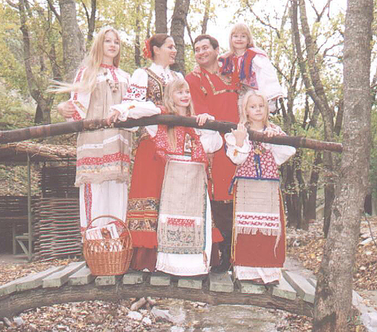

«КРЕПКАЯ СЕМЬЯ. КРЕПКИЙ РОД. КРЕПКИЙ НАРОД. КРЕПКАЯ ДЕРЖАВА!»
Дети – это богатство наследия государства! И сегодня по демографии русичей, нужно отметить, что Россия в нищенстве! Дети – наша радость и счастье, в них мы творим свои мечты и хотим, чтобы они жили на процветающей, счастливой Родине!
Сегодня шагает по всей Земле – не объявленная война с детьми! В приложении к газете «Отчизна» от 26 декабря 2002 года, в котором российские учёные, публицисты и политики описывают и анализируют деятельность разрушительных сил в России по растлению и разрушению морального, нравственного и физического здоровья молодой части населения страны. Технологии внедрения разрушительных программ с весьма благозвучными названиями: «Профилактика наркотизма», «Борьба со СПИДом», «Охрана материнства и детства» и т.п., которые и являются на самом деле, программами распространения наркомании и СПИДа, уничтожения и материнства и детства! Программы полового воспитания и обучения контрацепции также являются РАЗВРАЩАЮЩИМИ! (Тому пример – уже имеющийся опыт ряда стран Западной Европы). Ядовитые ростки под эгидой «Планирования семьи», «Любовь без риска», «СПИД, безопасный секс – важная информация для молодых людей» - рождают порочный круг разврата как современную норму и бесстыдно разъясняют и пропагандируют технологию деградации! После воздействия такого «воспитания», многие дети вовлекаются в раннюю половую жизнь, что приводит их к тяжёлым последствиям!
Как показали социологические исследования, две трети подростков, начавших половую жизнь в 14 лет, уже год принимают наркотики, поскольку чувствуют себя «использованными», несчастными, брошенными, опустошёнными, и находятся в состоянии глубокой депрессии. У шведов, ставшими первыми жертвами экспериментов «полового воспитания», 70% взрослых никогда не имели и не желают иметь семью! Депрессивное состояние подростков, познавших сомнительные радости «безопасного секса», на следующей стадии усугубляется депрессивной музыкой дискотек. И тут уже находятся «доброхоты», которые предлагают несчастному радикальное средство от депрессии – наркотики. Причём, для начала, бесплатно, а дальше – самостоятельный поиск наркотика и средств, для их приобретения, со всеми тяжкими последствиями. Хорошо выстроенная цепь даёт рост наркоманов и алкоголиков в России примерно –15% в год!
Можно ещё много приводить примеров по уничтожению народа в целом, это и СМИ, и ТВ пропагандирующие разврат и вседозволенность. Итогом такого морально-нравственного падения взращивает новое поколение семей, где бытует пьяное состояние, в котором рождаются дети, нередко больные. Институт современной семьи можно сказать - полностью разрушен! В итоге страдают опять-таки дети – это сироты (при живых родителях), рост беспризорников и ряд вытекающих из этого страшных последствий, что является общей бедой нашей Родины. Потеря в обществе духовных ценностей породила монстра, который злорадствует на Русской Земле!
Сегодня нужно менять мышление и образ жизни, которые подведут каждого человека к истинному определению действительности, и каждому дать настоящую характеристику и оценку нынешней ситуации в России. Что же стоит за будущим Русского Рода? А будущее – это дети! Как показывает современная жизненная практика, что очень многое направленно против светлого будущего детей в целом! Нет достойных законов, которые в действительности укрепляли и множили бы КРЕПКИЕ семьи! А ведь ядро и сила КРЕПКОЙ ДЕРЖАВЫ во все времена была и остаётся – это крепкая и дружная семья!
Во все времена Русь держалась на КРЕПКИХ РОДАХ, в которых было много детей. Они отличались крепкой дружбой, взаимопомощью, трудолюбием, умением ладить с окружающими, уважать старших и заботиться о младших. Из них вырастали сильные духом и телом юноши и девушки, которые становились прекрасными родителями своим детям. Чистое сознание и любовь не давали даже мысли к изменам, разводам. Потому как высокий духовный уровень присутствовал в каждом, все жили и трудились во благо Рода! Когда крепкая семья, то дети выросшие из неё никогда не отдадут своих детей на попечение государству. Моральные устои крепки, как и крепки, их корни!
Ещё около ста лет назад не существовали детские дома в таком ошеломляющем количестве! Это показатель больного общества. Посмотрим на Запад - у них нет детских домов и брошенных детей. Там существуют только временные социальные приюты для детей оказавшихся в трудных жизненных ситуациях. К сожалению, в России, становится привычным ростом сиротских домов. Поэтому единственный путь к восстановлению крепкой семьи – это обращение и возрождение традиций родной культуры. События нашего времени подталкивают прикоснуться к очень древнему и очень богатому Наследию Предков, к нашим прекрасным, древним, родным традициям и самобытной, неповторимой, мудрой Ведической Культуре.
Возрождение утерянных знаний о чистоте Рода для созидания благодетельного потомства, значимости девственности, о родительском долге дадут рост физическому и духовному потенциалу всего народа, а значит и здоровью будущих поколений! Где осознанное самовоспитание юношей и девушек идёт ещё задолго до рождения своего будущего потомства.
И возвратившись к сегодняшнему дню, мы имеем то, что имеем! В современном мире произошла подмена понятия высшего чувства ЛЮБВИ (Любовь: Лю - люди, Бо - Богов, В - ведать, Люди Богов Ведающие). Также сегодняшние молодожёны ограничиваются заключением БРАКА (словосочетание говорит само за себя), а не созданием СЕМЕЙНОГО СОЮЗА!
Крепостью РОДОВ во все времена был, есть и будет – это труд на родной Земле. И силу, которую черпали от созидательного сотворения с природой, распределяли среди детей и внуков. Трудились на своей земле, которая была в вечном пользовании данного Рода, то есть, передана по наследству предыдущими поколениями. Кедрачи, дубравы, рощи - заложенные их дедами - прадедами, сады, взращенные отцами, крепкий дом, очаг, обласканный материнской любовью - всё это богатство передавалось в наследство детям, внукам, правнукам. Пространство это именовалось – Родовой Вотчиной. Наследники с чуткостью относились к полученному богатству, с трепетом и нежностью заботились, оберегали своё пространство, жили в гармонии с окружающим миром, всячески поддерживали и сохраняли в экологической чистоте Природу. И действительность каждый Род определял собой: наличие крепких корней, многодетных семей.
Сейчас как никогда остро встал вопрос о возрождении Родовой Ведической Культуре. У России судьба не плестись в хвосте мировой истории, а быть Ведущей и процветающим государством с прекрасным и счастливым будущим. Это будущее начинается со счастливой и крепкой семьи!
Крепкая Семья - крепкий Род, крепкий Род - крепкий Народ, Крепок Народ - крепка Держава!
Автор - Панькова Е.Г.
